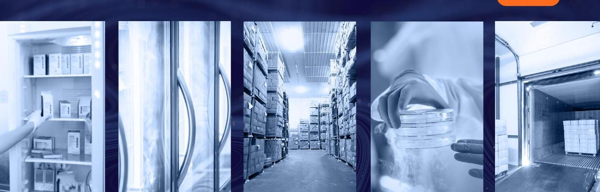
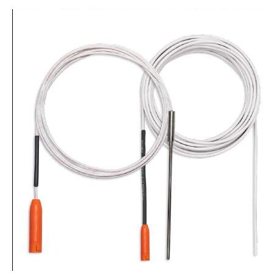
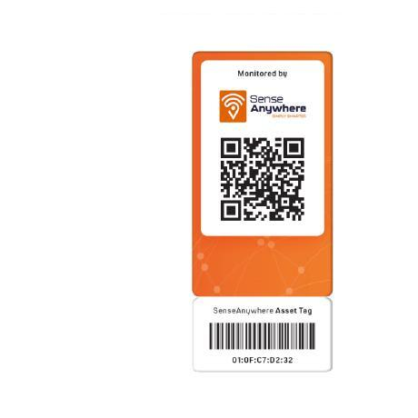
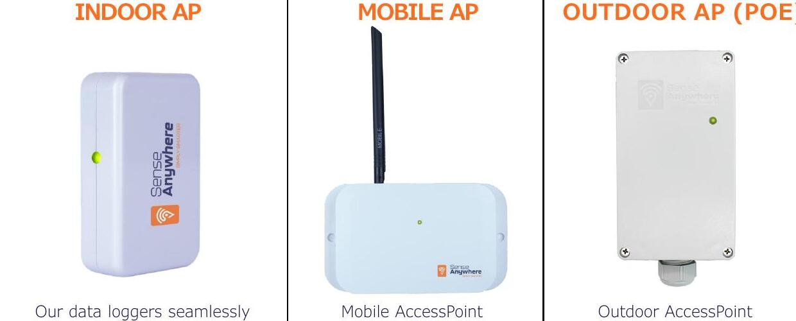

Measure precisely
Capture temperature, humidity and analogue inputs with accurate wireless sensors.
Electrolines Arabia brings SenseAnywhere wireless monitoring technology to organizations across Saudi Arabia—with local product guidance and solution support.
ONE COMPLETE MONITORING SYSTEM
Install in minutes, monitor continuously and respond immediately. SenseAnywhere connects every critical point in one secure, compliant system.
Capture temperature, humidity and analogue inputs with accurate wireless sensors.
AccessPoints discover devices instantly. No pairing, cables or local software.
Review live graphs, audit trails and scheduled reports from any device.
Alert the right users by email, SMS or voice when limits are exceeded.

BUILT FOR CRITICAL ENVIRONMENTS
One flexible platform protects sensitive products through production, storage, validation and transport.
MODULAR PRODUCT ECOSYSTEM
Combine long-life data loggers, specialized probes and smart connectivity to match your exact monitoring environment.
 01
01Monitor temperature from -40°C to 70°C, relative humidity and external sensors with a 10-year battery life.
Discover product ↗
02Monitor ultra-low and ultra-high temperatures from -200°C to 250°C in demanding environments.

03Hot-swap sensors during recalibration without monitoring gaps or additional license costs.

Indoor, mobile and outdoor AccessPoints keep every logger connected—without manual pairing.
Find your setup ↗THE SACLIENT CLOUD PLATFORM
Manage live conditions, devices, alarms, reports and compliance evidence from one secure portal—accessible anywhere.
QUALITY · RELIABILITY · SECURITY
Validated software, accredited calibration and resilient European cloud infrastructure support the world’s most demanding regulated environments.
ISO 9001, ISO 14001, ISO 27001 and ISO/IEC 17025 accredited calibration.
Encrypted two-way communication and regular penetration testing protect every reading.
Microsoft Azure, continuous backups, European data centres and 99.99% database uptime.
LOCAL EXPERTISE · GLOBAL TECHNOLOGY
Speak with Electrolines Arabia about SenseAnywhere solutions for your facility, process or cold chain in Saudi Arabia.